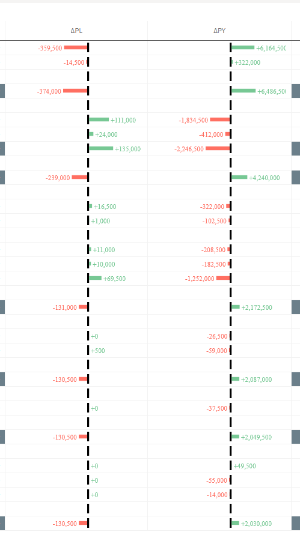

A P&L table that just lists Actual next to Plan makes you do the subtraction in your head. Add a ΔPL column with a tiny bar that grows right and green when you beat plan and left and red when you miss it, and the whole statement reads at a glance — which lines helped, which hurt, and by how much relative to each other. No extension, just one expression and an inline SVG.

This is the two-sided sibling of the progress bar in a table trick. Same core idea — an SVG string rendered as an image in a column — but instead of a bar filling from the left, it diverges from a baseline planted in the middle.
Prerequisite: Representation → Image
Exactly like the progress bar: open the column settings for the measure and switch
Representation from Value to Image. Without it, Qlik prints
the raw data:image/svg+xml,... string instead of drawing the bar. It's per column,
so set it on the ΔPL column specifically.
The idea: one baseline, two directions
The SVG canvas is 150 units wide. I plant a 2px black baseline at x = 80 — that's the zero line, the position of Plan. Everything is measured from there:
- Beat plan (Actual ≥ Plan): a green bar starts at
x = 82and grows to the right, with the label after it. - Miss plan (Actual < Plan): a red bar ends at
x = 80and grows to the left, with a right-aligned label before it.
A single outer If([AC P&L] >= [PL P&L], …, …) picks which of the two SVGs to
emit. The colour and the direction switch together.
Scaling: the two variables
A bar is only meaningful if every row shares the same scale. The trick is to make the
largest variance across all rows fill the available 25px, and let every other bar
shrink proportionally. To know that maximum we need the biggest positive and the most negative
ΔPL across the whole dimension — and that's exactly what Aggr() gives us.
Structure Line is the dimension in the table (the P&L rows). These two variables
compute the spread across all of them:
// Largest favourable variance (most positive AC − PL)
vCFPLP&L = Max(Aggr([AC P&L] - [PL P&L], [Structure Line]))
// Largest unfavourable variance (most negative AC − PL)
vCFPLP&L2 = Min(Aggr([AC P&L] - [PL P&L], [Structure Line]))Aggr() evaluates [AC P&L] - [PL P&L] once per Structure Line,
producing a virtual array of one variance per row. Max() / Min() then
collapse that array to the extremes — the longest green and the longest red bar the table will
ever need to draw. Because the variables recalculate with selections, the scale stays honest
when the user filters.
The expression
Set this as the ΔPL measure (Representation → Image). The two halves are mirror images of each other — same maths, opposite direction.
=If([AC P&L] >= [PL P&L],
// ── Favourable: green bar grows RIGHT from the baseline ──
'data:image/svg+xml,<svg xmlns="http://www.w3.org/2000/svg" height="10" width="150">'
& '<style>.value { font: 7px serif; font-family:"Inter Regular"; fill: rgb(119, 200, 148); }</style>'
& '<rect x="80" y="0" width="2" height="10" style="fill:rgb(0,0,0)"/>'
& '<rect x="82" y="3" width="'
& fabs([AC P&L]-[PL P&L]) / RangeMax($(vCFPLP&L), 1) * 25
& '" height="4" style="fill:rgb(119, 200, 148)"/>'
& '<text x="'
& (82 + fabs([AC P&L]-[PL P&L]) / RangeMax($(vCFPLP&L), 1) * 25 + 2)
& '" y="8" class="value">' & Num([AC P&L]-[PL P&L], '+#,##0') & '</text>'
& '</svg>',
// ── Unfavourable: red bar grows LEFT from the baseline ──
'data:image/svg+xml,<svg xmlns="http://www.w3.org/2000/svg" height="10" width="150">'
& '<style>.value { font: 7px serif; font-family:"Inter Regular"; fill: rgb(255, 111, 98); }</style>'
& '<rect x="'
& (80 - fabs([AC P&L]-[PL P&L]) / fabs($(vCFPLP&L2)) * 25)
& '" y="3" width="'
& fabs([AC P&L]-[PL P&L]) / fabs($(vCFPLP&L2)) * 25
& '" height="4" style="fill:rgb(255, 111, 98)"/>'
& '<rect x="80" y="0" width="2" height="10" style="fill:rgb(0,0,0)"/>'
& '<text x="'
& (80 - fabs([AC P&L]-[PL P&L]) / fabs($(vCFPLP&L2)) * 25 - 2)
& '" y="8" class="value" text-anchor="end">' & Num([AC P&L]-[PL P&L], '#,##0') & '</text>'
& '</svg>'
)How the maths works
The bar length is the same calculation on both sides:
fabs([AC P&L] - [PL P&L]) / scale * 25
fabs() takes the absolute size of the gap. Dividing by the scale (the largest
positive variance, or the absolute value of the most negative one) gives a fraction from 0 to 1,
and * 25 turns that into a pixel width — so the biggest bar in the table is 25px and
everything else is proportional.
-
Right bar (green): starts at the fixed
x = 82(just past the baseline) and the width grows rightward. The label sits at82 + width + 2, default left-aligned, so it trails the bar.RangeMax($(vCFPLP&L), 1)guards against dividing by zero when the largest variance is 0. -
Left bar (red): the width is the same formula, but the rectangle's
xis pushed back to80 − widthso it ends at the baseline and extends left. The label is placed at80 − width − 2withtext-anchor="end", so it grows away from the baseline too instead of overprinting the bar.
See it in action
A few P&L lines on a shared scale — biggest beat is +135,000 (KOSTNADER), biggest miss is −374,000 (Nettoomsättning). Every other bar is sized relative to those:
Two encoding gotchas
Font names with spaces. The <style> block sets
font-family:"Inter Regular". Because the SVG already lives inside a
single-quoted Qlik string, you can't drop raw double quotes around the font name — the HTML
entity " stands in for them so the name survives intact.
Colours via rgb(), not #hex. The
progress bar post had to write # as
%23 because Qlik reads a bare # as a variable reference. Using
fill: rgb(119, 200, 148) sidesteps that entirely — no escaping, and it's easier to
tweak the channels by eye.
Sorting and export
One deliberate difference from the progress-bar version: this expression returns a plain SVG
string, not a Dual(). That keeps it readable, but it means the column sorts
alphabetically on the SVG text, which is meaningless. If you want this column to sort by the
actual variance, wrap the whole If() in
Dual( …that whole expression… , [AC P&L]-[PL P&L] ) so the number drives the sort.
data:image/svg+xml,… string. Keep a plain numeric ΔPL
measure alongside it if your users export.
Bottom line
- One baseline, two mirrored SVGs picked by a single
If(AC ≥ PL, …)— green right for beats, red left for misses. - Scale with
Max/Min(Aggr(…, [dimension]))so the longest bar fills 25px and every other bar is proportional — and stays honest under selection. - Use
rgb()for colour to avoid the%23escape, and"for font names with spaces. - Wrap in
Dual()if you need the column to sort by variance.